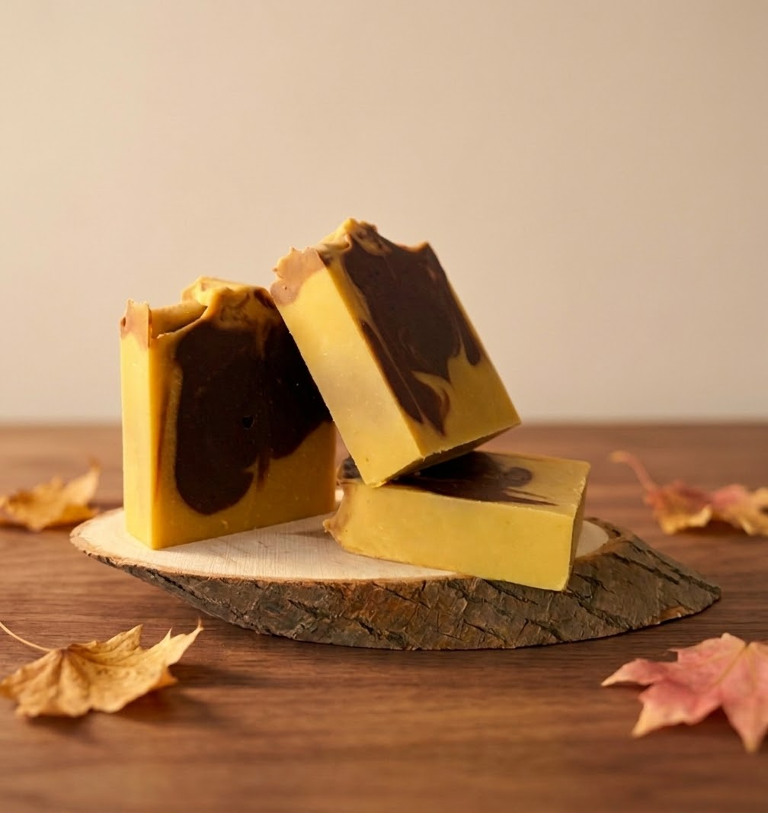

Handcrafted in Gatineau, Québec
Chocolate Pumpkin

A cozy, comforting autumn treat for your skin. Handcrafted with real pumpkin puree, cacao powder, and French clay, this bar creates a creamy, deeply nourishing lather powered by rich shea butter and olive oil. Scented naturally with a warm fall blend of sweet orange, cedarwood, clove, and a sprinkle of cinnamon. Perfect for bringing a touch of warm seasonal luxury to your daily routine.
Ingredients
Saponified Olive Oil, Water, Saponified Shea Butter, Saponified Coconut Oil, Saponified Jojoba Oil, Pumpkin Puree, Saponified Castor Oil, Sweet Orange Essential Oil, Cocoa Powder, Cedarwood Essential Oil, Clove Essential Oil, French Clay, Ground Cinnamon.
Browse all products